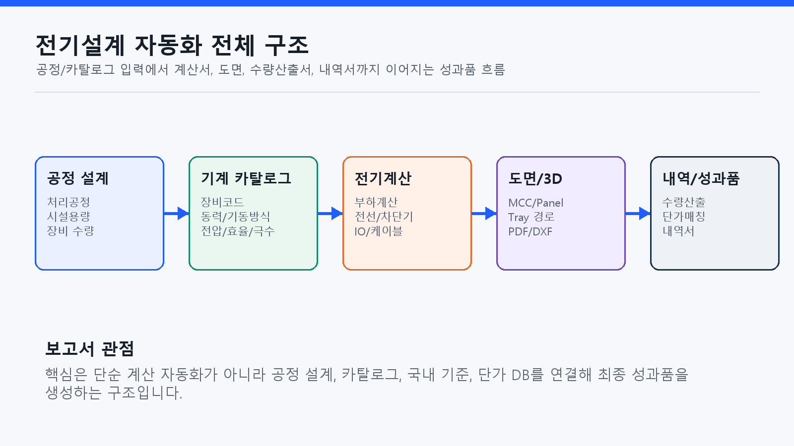
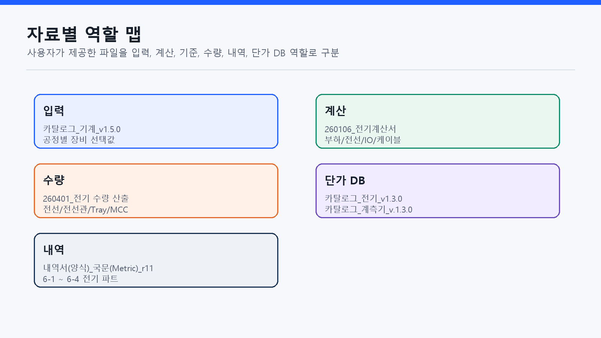
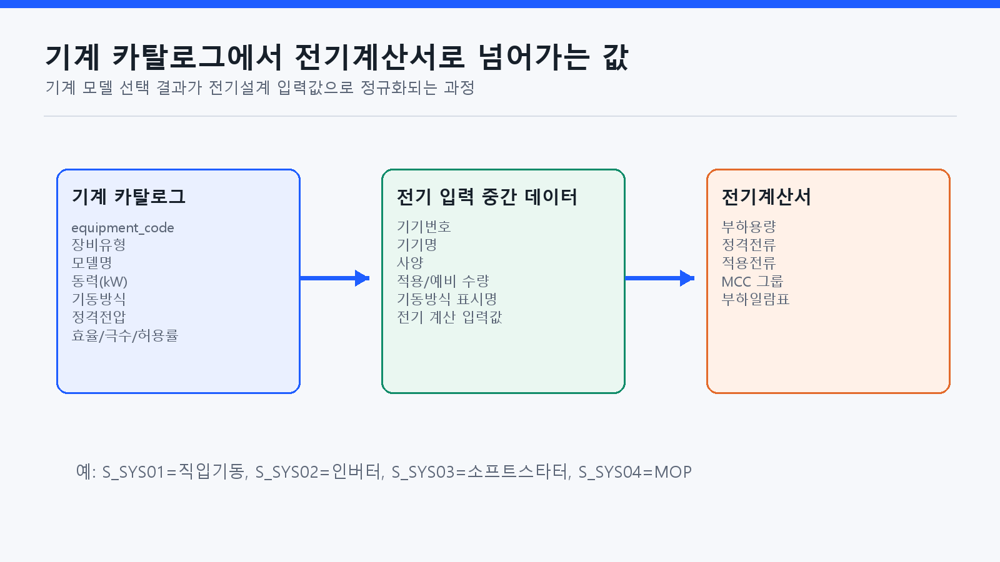
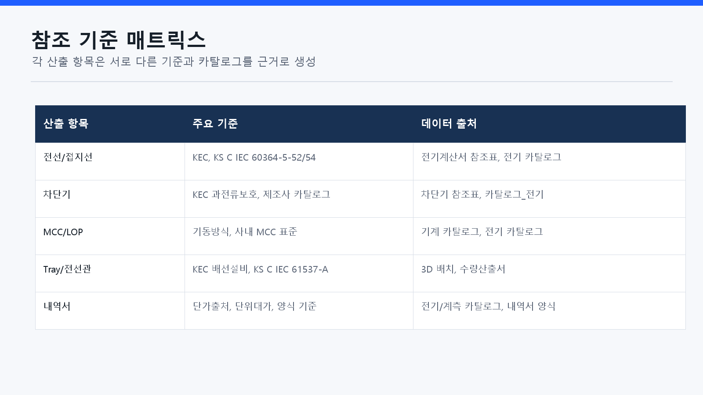
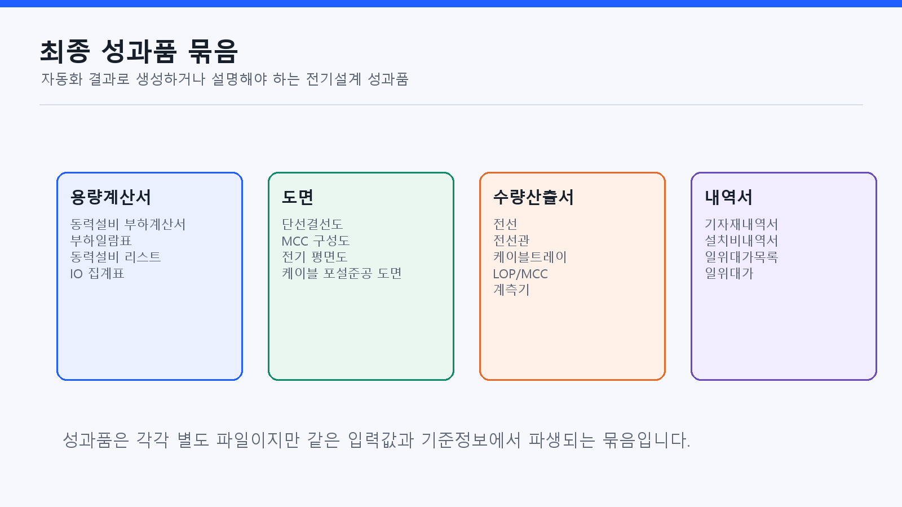
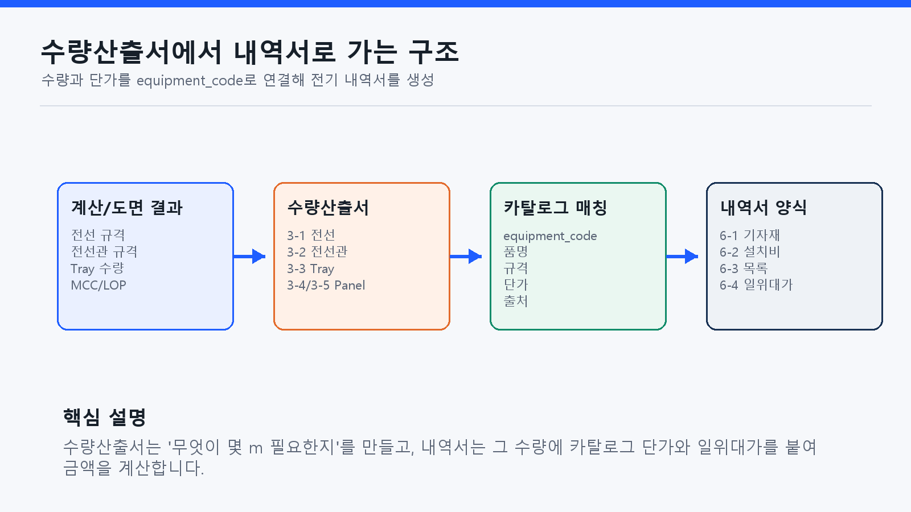

전기설계 자동화 구조 및 레퍼런스 보고서
조언을 반영해 전기설계 자동화 프로그램이 어떤 입력자료를 받고, 어떤 기준을 참고하며, 최종 성과품을 어떻게 생성하는지 설명하기 위한 보고자료입니다.
1. 보고서 목적
이 보고서는 전기설계 자동화 프로그램을 단순 계산서 생성 기능이 아니라, 공정 설계, 기계 카탈로그, 국내 전기설계 기준, 전기/계측기 단가 DB, 도면 및 내역서 양식을 연결하는 성과품 생성 구조로 설명하기 위해 작성했습니다.

2. 참고한 원본 자료
사용자가 제공한 자료는 역할에 따라 입력, 계산, 수량, 내역, 단가 DB로 나누어 정리했습니다.

| 자료 | 보고서에서 보는 역할 |
|---|---|
카탈로그_기계_v1.5.0.xlsx | 공정별 기계 선택 시 전기설계 입력값을 제공합니다. 동력, 기동방식, 전압, 효율, 극수, 허용률 등이 핵심입니다. |
260106_전기계산서(최종샘플).xlsx | 전기 용량계산서, 부하일람표, 전선/차단기, IO, 케이블 계산 흐름의 원형입니다. |
260401_전기 수량 산출_r3.xlsx | 계산/도면 결과를 전선, 전선관, Tray, LOP, MCC 등 항목별 수량으로 집계합니다. |
내역서(양식)_국문(Metric)_r11.xlsx | 전기 내역서 양식입니다. 전기 파트는 6-1~6-4 시트를 중심으로 참고합니다. |
카탈로그_전기_v1.3.0.xlsx, 카탈로그_계측기_v.1.3.0.xlsx | 내역서 생성을 위한 품명, 규격, 단위, 단가, 단가출처 DB 역할을 합니다. |
3. 입력 구조
전기설계 입력값은 전기 담당자가 모든 항목을 직접 입력하는 방식이 아닙니다. 사용자가 공정을 설계하고 기계 카탈로그에서 장비 모델을 선택하면, 해당 장비의 전기 속성이 전기계산서 입력값으로 전달됩니다.

4. 계산 구조
전기계산서는 카탈로그 기반 기기 리스트를 받아 부하용량, 정격전류, 적용전류, MCC 그룹, 부하일람표, 전선/접지선/차단기 선정, IO 집계, 케이블 포설준공 정보를 생성합니다.
동력설비 부하계산서, 부하일람표, 동력설비 리스트, IO 집계표
전선, 접지선, 차단기, 제어기기, 전선관, 케이블 포설준공 정보
5. 기준과 레퍼런스
각 산출 항목은 서로 다른 기준을 참고합니다. 법적/기술 기준은 KEC와 KS/IEC를 기준으로 하고, 실제 모델명과 단가는 제조사 또는 내부 카탈로그 DB를 기준으로 합니다.

- 전선/배선설비: KEC, KS C IEC 60364-5-52
- 보호도체/접지: KEC, KS C IEC 60364-5-54
- 케이블 트레이: KS C IEC 61537-A, 제조사 카탈로그
- 차단기/제어기기: KEC 과전류보호 조건, 제조사 카탈로그
- 내역서: 전기/계측기 카탈로그, 단가출처, 일위대가 양식
| 레퍼런스 | 활용 위치 | 확인 경로 |
|---|---|---|
| 한국전기설비규정(KEC) | 전선, 접지, 보호장치, 배선설비 기준 | KEC 개요, KEC 규정 |
| KEC 핸드북/공고 | 세부 해설, 적용 기준 버전 확인 | 핸드북, 공고/전문 |
| KS C IEC 60364-5-52 | 배선설비 선정과 시공 | e나라 표준인증 |
| KS C IEC 60364-5-54 | 접지설비와 보호도체 | KSSN 표준 상세 |
| KS C IEC 61537-A | 케이블 트레이 및 래더 시스템 | KSSN 표준 상세 |
| 기계/전기/계측기 카탈로그 | 모델, 규격, 단가, 코드 매칭 | 프로젝트 제공 XLSX 파일 |
6. 최종 성과품
최종 성과품은 계산서, 도면, 수량산출서, 내역서가 함께 묶인 구조입니다. 각각 별도 파일처럼 보이지만 같은 입력값과 기준정보에서 파생됩니다.

7. 수량산출서와 내역서 생성
수량산출서는 계산서와 도면 결과를 항목별 수량으로 집계합니다. 내역서는 그 수량에 전기/계측기 카탈로그의 단가와 일위대가를 붙여 금액을 계산합니다.

| 단계 | 설명 |
|---|---|
| 수량산출 | 전선, 전선관, Tray, LOP, MCC, 계측기 수량을 집계합니다. |
| 카탈로그 매칭 | equipment_code 또는 품목 코드를 기준으로 품명, 규격, 단위, 단가, 단가출처를 조회합니다. |
| 내역서 반영 | 국문 Metric 내역서 양식의 6-1 기자재내역서, 6-2 설치비내역서, 6-3 일위대가목록, 6-4 일위대가에 반영합니다. |
8. 보고자료용 핵심 문장
9. 후속 보완 포인트
- 각 참조표의 기준 버전과 적용일자를 DB 필드로 관리해야 합니다.
- 카탈로그의
equipment_code를 계산서, 수량산출서, 내역서의 공통 키로 고정해야 합니다. - 수량산출 기준, 단가출처, 일위대가 템플릿은 내역서 생성 이력에 함께 남겨야 합니다.
- 도면 수동 편집이 발생하면 계산 데이터와 도면 데이터의 동기화 정책이 필요합니다.